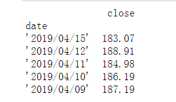
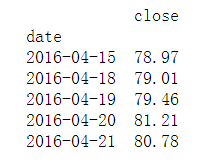
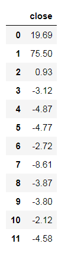
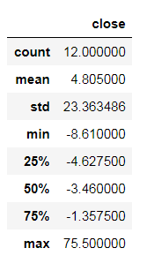

说明：本文只是通过自己的已学知识对股票数据进行了一个简单的量化分析，只考虑了收盘情况，真实的量化交易中仅仅考虑收盘情况是不够的，还有很多的复杂因素，而且仅仅三年数据是不足以来指导真实的股票交易的，因此本文只是作为一个简单的python练手项目。
一、分析目的
利用预先设定的策略，通过对股票交易的历史数据进行回测，验证该策略是否能指导股票交易。
二、数据处理
1、数据集描述
数据集来源：https://www.nasdaq.com/symbol/baba/historical
数据集简介：此数据集来源于Nasdaq网站，本文获取的是2016/04/15——2019/04/15三年的数据。
列名称理解：
原数据表的字段列名非常规范，无需进行重命名，以下是每个列名称的理解：
date:日期
close：收盘价格
volumn：成交量
open：开盘价格
high：日最高价格
low：日最低价格
本次只是简单针对收盘价格进行了分析。
2、 数据清洗
该数据集比较规范，没有重复值以及它异常值需要处理。
3、数据导入
# 加载库
import numpy as np
import pandas as pd
# 加载数据（本次只用到了日期和收盘价）
df = pd.read_csv('E:/相关文件夹/BABA_stock.csv',index_col = 'date',usecols = [0,1])
df.head()

三、数据分析
# 将索引转化为日期索引
df.index = pd.to_datetime(df.index)
# df.index = pd.DatetimeIndex(df.index.str.strip("'"))
df.index
# 按索引排序
df.sort_index(inplace = True )
df.head()

买卖策略：前一天低于60日平均线第二天高于60日平均线时买入，前一天高于60日平均线第二天低于60日平均线时卖出。
1、计算60日移动平均值
ma60 = df.rolling(60).mean().dropna()
ma60
2、找到值从False变为True时买入，True变为False时卖出
ma60_model = df['close'] - ma60['close'] >0
ma60_model
3、找出买点和卖点
# 自定义方法找出买点和卖点
def get_deal_date(w,is_buy = True):
if is_buy == True:
return True if w[0] == False and w[1] == True else False
else:
return True if w[0] == True and w[1] == False else False
# raw=False没有的话会有警告信息
# 如果删除Na值，会有缺失，所以这里用0填充，转换为bool值方便后面取值
se_buy = ma60_model.rolling(2).apply(get_deal_date,raw = False).fillna(0).astype('bool')
se_buy
# apply的args接受数组或者字典给自定义函数传参
se_sale = ma60_model.rolling(2).apply(get_deal_date,raw = False,args = [False]).fillna(0).astype('bool')
se_sale
# 使用布尔索引找出买点和卖点
buy_info = df[se_buy.values]
sale_info = df[se_sale.values]
buy_info
sale_info
4、计算获利情况（每股交易获利情况）
# 转换为数值索引：需要将索引进行处理后再进行运算
no_index_buy_info = buy_info.reset_index(drop = True)
no_index_sale_info = sale_info.reset_index(drop = True)
print(no_index_buy_info.head())
print(no_index_sale_info.head())
# 获利情况
profit = no_index_sale_info - no_index_buy_info
# 最后一组数据中没有卖出点，可能会出现null值
profit.dropna()
# 计算总体利润情况
profit.describe()
# 总共赚了多少钱
profit.sum() 
图a 图b
close 57.66
dtype: float64从图a可以看出每次的买入和卖出有盈有亏，从图b的整体情况来看，总共交易12次，亏损最多的时候是8.61美元，平均每次获利4.8，最多的一次赚了75.5美元；通过对
所有交易进行汇总分析，得出了获利总额为57.66美元，总体来说是盈利的。
5、1w美元的最终盈利情况
策略：将每次卖出的钱投入到下一次进行买入
all_money = 10000
remain = all_money
# 如果加上每次交易金额的万分之三手续费
fee = 0.0003
# 由于最后一次未出现卖点，所以交易次数需要用买入次数减一
for i in range(len(no_index_buy_info)-1):
buy_count = remain/no_index_buy_info.iloc[i]
remain = buy_count * no_index_sale_info.iloc[i]*(1-fee)
print(remain)
close 12413.412104
Name: 0, dtype: float64
close 22301.278558
dtype: float64
close 22412.294488
dtype: float64
close 22024.926199
dtype: float64
close 21439.23349
dtype: float64
close 20885.390796
dtype: float64
close 20576.028522
dtype: float64
close 19640.163023
dtype: float64
close 19232.001776
dtype: float64
close 18857.206606
dtype: float64
close 18595.722503
dtype: float64
close 18044.391215
dtype: float64
从以上结果可以看出：三年获得的利润为8044.39美元，年化大概26%左右，收益总体来说还是很不错的，该策略可以放到其他周期或者其他股票里进行分析，如果都可以获利，说明该策略在指导股票交易上是有效的。